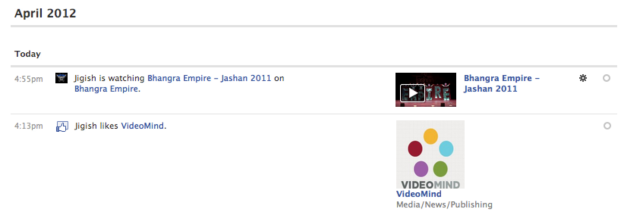
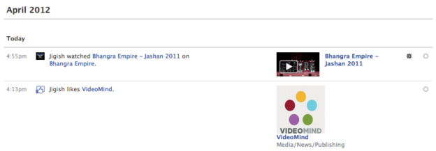

The Facebook Code Example (available at zip download) enables you to create a Facebook application that posts video viewing information to each viewer’s timeline, whenever a viewer watches a video. Sharing is automatic and the viewer does not have to take any action.
While a user is watching a video, the timeline indicates that the user is watching it.
After the user completes the video, the timeline is updated to indicate that the user watched the video.
